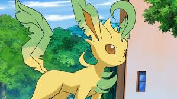
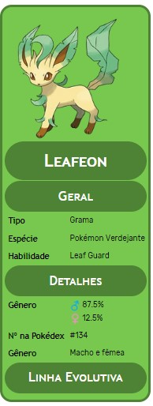

Leafeon, o Natural
Leafeon (em Japonês: リーフィア Leafia) e um Pokémon do tipo Grama introduzido na quarta generação. É uma das evoluções possiveis do Eevee.
Ele tem um corpo fino e elegante, ideal para se esconder na floresta. Sua pele, tem a cor amarela com tons de verde em suas orelhas e cauda.
Diferenças de Genero
Não ha diferenças de genero no Leafon
Habilidades Especiais
A estrutura celular deste Pokémon é semelhante às plantas, o que lhe permite realizar a fotossíntese e purificar o ar em torno dele, dormindo sob lugares ensolarados.
Pokédex
Assim como as plantas, Leafeon faz fotossíntese. Por esta razão, está sempre cercado por um ar puro. Procura sempre dormir exposto à luz do sol.
